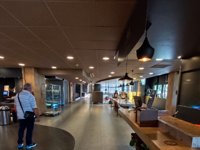

网站更新记录
2025年8月9日，billund,离开伦敦，从Harwich港乘班轮经北海去阿姆。这条从英国出来的线路，非常随意而舒服。
2025年8月12日，阿姆机场的小攻略。机场到达大厅，下楼就是火车站，直通阿姆，海牙，鹿特丹。
上楼通道，直通，登喜路，世界贸易中心，希尔顿，有步行电梯。
短时间的机场等候，可以从机场到达的出口出来，是shutter,可以乘坐IBIS的机场专车。
到IBIS大堂休息，有WIFI，办公位，全球制式的电源接口，还有电脑，配套的办公设备齐全。
有休息区，可以歪着躺着。食品，酒吧。齐全。可以存放行李。很不错的一个地方。
图片测试
我的图片

IBIS办公区
这里将展示历史公告、更新说明或其他消息。
12 July 2025： Evan Bei Insert Library open。
« 返回主页